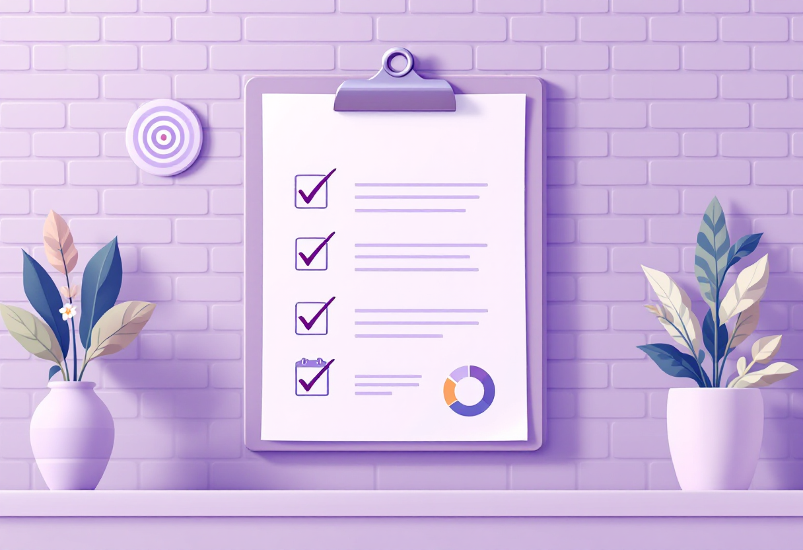

Планування життя
Як ставити реалістичні цілі та не втрачати фокус

Постановка цілей
Як формулювати цілі
Планування не гарантує успіху, але допомагає краще розподіляти час, сили та увагу. Хороший план має підтримувати тебе в повсякденному житті, а не створювати додатковий тиск.
Цілі працюють краще, коли вони конкретні та зрозумілі.
Замість загальних намірів на кшталт «більше читати» або «займатися спортом» спробуй визначити конкретний результат:
- прочитати одну книгу за місяць;
- бігати двічі на тиждень;
- відкладати певну суму щомісяця;
- завершити онлайн-курс до конкретної дати.
Чим зрозуміліша ціль, тим простіше оцінити свій прогрес.

Планування тижня
Зосереджуйся на головному
Не намагайся запланувати кожну хвилину.
Корисно визначити:
- 2-3 головні пріоритети на тиждень;
- кілька важливих справ на кожен день;
- час для відпочинку та особистих справ;
- резерв на непередбачені ситуації.
Якщо план перевантажений із самого початку, виконати його буде складніше.

Як боротися з відкладанням справ
Починай із маленьких кроків
Відкладати справи час від часу – нормально. Часто проблема полягає не в ліні, а в тому, що завдання здається занадто великим або незрозумілим.
Що може допомогти:
- розбити велике завдання на менші етапи;
- почати з найпростішої дії;
- прибрати зайві відволікаючі фактори;
- працювати короткими проміжками часу з перервами.
Іноді достатньо витратити 5-10 хвилин на початок, щоб увійти в робочий ритм.

Баланс між справами та відпочинком
Не плануй лише продуктивність
Відпочинок – це частина нормального ритму життя, а не нагорода за виконані завдання.
Спробуй:
- залишати вільний час у графіку;
- регулярно робити перерви;
- знаходити час для хобі та спілкування;
- звертати увагу на ознаки перевтоми.
Якщо постійно не вистачає часу, іноді корисніше скоротити кількість завдань, а не працювати довше.

Короткий чеклист
- ✓ Формулюй конкретні цілі
- ✓ Визначай кілька головних пріоритетів
- ✓ Розбивай великі завдання на етапи
- ✓ Плануй час для відпочинку
- ✓ Не перевантажуй графік справами
- ✓ Регулярно переглядай свої плани та коригуй їх за потреби